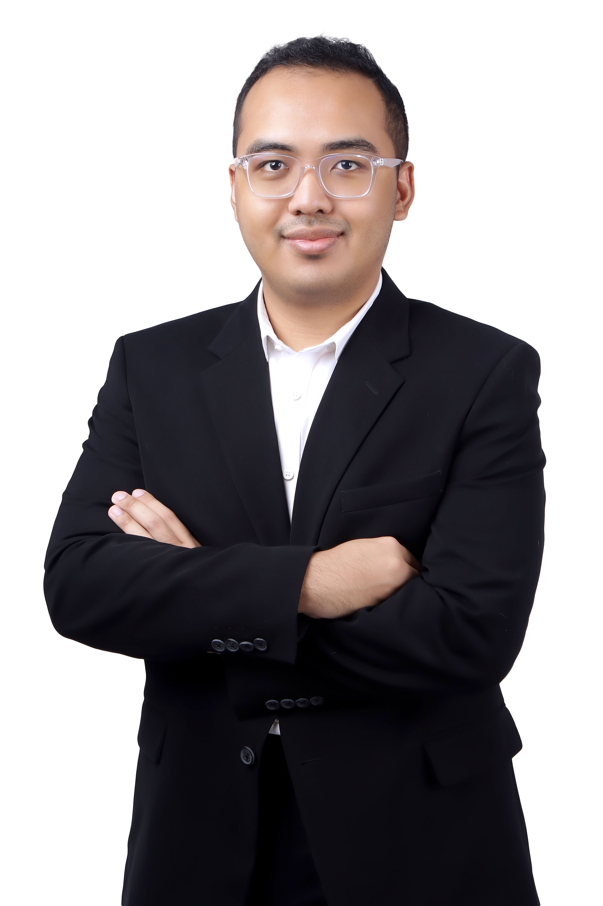
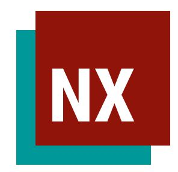
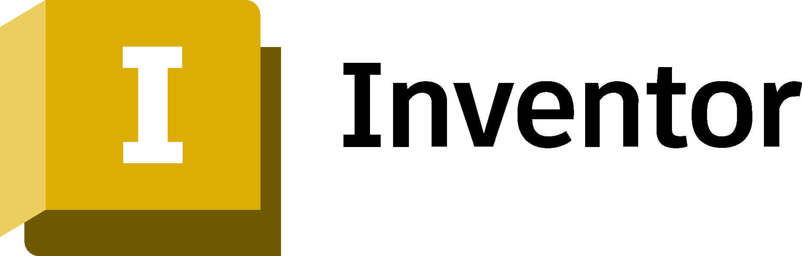

Muhammad Bintang Setya
I am Muhammad Bintang Setya, a Mechanical Engineering Master's student at Aalto University, majoring in Solid Mechanics. With a technical background in 3D Modelling and Additive Manufacturing. I am a good problem-solver, good communicator, and quick learner. I have a strong interest in and hands-on experience with 3D CAD design and modelling, as well as in assessing structural strength through engineering calculations and simulations.
How can I assist you? →
Influence of Fastener Flexibility on Riveted Double Shear Metal Joint on N219 Lower Skin
Stress has a major impact on an aircraft's fatigue life during design. Stress concentration measures a place where local stress is much higher than surrounding stress (Kt). In riveted double shear metal joint structures, the maximum local stress is influenced by two factors, bearing stress from the fastener's load distribution and bypass stress from the fastener's residual load. This distribution load is impacted by fastener flexibility, which measures stiffness using methods by Tate and Rosenfeld or Huth. The maximum local stress calculation difference between both methods is 2.81%. Using MSC Patran and MSC Nastran software, distribution load up to the maximum local stress in each area may be calculated and visualized using two different FEM model, 1D Bush Element and FEM model using hole resulting highest value 3.89%. While compared to analytical method the highest maximum difference is 14.48%. Furthermore, stress concentrations influence the stress intensity factor (K), a measure of stress at a crack's tip, proportional to crack growth rate. Determining the stress intensity factor (K) on the riveted double shear metal joint structures are considering two factors, stress spectrum and geometry correction factor. The stress intensity factor (K) is able calculated and analyzed using crack software analysis or the energy release method, which provides a similar pattern.
Bank Rakyat Indonesia (BRI), a state-owned bank in Indonesia, requires On-the-Spot (OTS) certification for mortgage housing to verify physical property conditions before approval.
The process relies heavily on field officers and regional managers to conduct direct inspections for mortgage applications, which can be time-consuming, labor-intensive, and inefficient, especially in rural or remote areas.
To address this challenge, my team and I developed an unmanned aerial vehicle (UAV) designed to streamline field inspections by reducing reliance on field officers and regional managers.
The workflow reduces on the need for field officers and regional managers by combining UAV-based physical inspections with document verification using the HOMESPOT digital platform.
During the operation, the autonomous UAV automatically capture data like building models, site maps, and structural layouts, then send it to the system for AI analysis by transmitting from the drone to BRINet via onboard process in NVIDIA Jetson Nano.
The UAV was custom-built VTOL and Fixed Wing Frame to support both vertical take-off and improve long flight efficiency. The UAV relies on 4 SunnySky X4112S KV450 brushless DC motor combined with a 15-inch propellers to support around 8 kg of payload including the UAV frame. The battery pack was assembled using TATTU G-TECH 22.2V 6S 10000mAh 25C Lipo Battery cells that allows the drone to fly for up to 90 minutes. An onboard NVIDIA Jetson Nano processes image data collected from the camera, supporting real-time data handling during inspection missions.
The UAV also features with Pixhawk Cube as the drone's autopilot flight controller and the central component of the telemetry system, Here 3 GPS Module, and FrSky telemetry radio operating at 433 MHz. In addition, the UAV is capable to flight up to 50 km making it suitable for long-range inspection in rural areas, and the drone is also designed to be compact and easy to operate by field officers with minimal training.
Stress has a big effect on how long an aeroplane can last during design.
To ensure sure flights are safe and reliable, the structural integrity of aircraft parts is very important.
In wing box structures, riveted spar and skin joints are very important because they are under a lot of stress and may experience stress concentration that can cause cracks to initiate and propagate over time.
A detailed stress and fatigue analysis is required to assist with the structural evaluation and maintenance planning of the N219 aircraft.
Therefore, the analysis utilised a two-dimensional finite element method (2D FEM) with MSC Nastran to assess the stress distribution of the N219 wing box components.
The analysis was mainly concerned with identifying a stress concentration in riveted joints that might indicate the initiation and propagation of cracks.
Based on the results of the stress analysis, the crack growth rates and fatigue cycles were also calculated to determine the lifespan of the components.
The analysis results were used to help determine intervals for maintenance and inspections and to support the evaluation of structural durability.
This work managed to evaluate the safety and reliability of aircraft structures by using simulation-based engineering analysis.
Monterro: Hiking Tour Assistant Powered by ESP32 LilyGo T-Watch
Monterro is a hiking tour assistant built around the LilyGo T-Watch 2020 V2. It tracks your steps, distance, duration, and calories in real time directly on your wrist, then synchronises the data to a Raspberry Pi over Bluetooth or WiFi. A live web dashboard displays everything as you hike. The project was developed as part of the ELEC-E8408 Embedded Systems Development group project at Aalto University, commissioned in the context of a Helsinki City Council brief for Finnish hiking tourism.
Bit-o: A wearable Menstrual Cramp Reliever Health Device
Bit-o was designed as a portable Transcutaneous Electrical Nerve Stimulation (TENS) device to help relieve menstrual cramps without the use of medication or surgery. Studies show that approximately 80% of women experience menstrual pain at some point in their lives, with 5% to 10% suffering pain severe enough to disrupt daily activities. This pain can lead to decreased productivity, with research indicating that 38% of women are unable to perform regular daily activities during their menstrual period. Despite its prevalence, menstrual pain is often underreported and inadequately addressed, highlighting the need for effective solutions to alleviate this widespread problem.
The prototype was made to be small, easy to use, and able to be used by the same person multiple times. The Arduino Nano microcontroller controls the intensity and frequency of the TENS signal, and a rotary potentiometer allows users adjust these settings to make them more comfortable. Electrodes on the skin provide the TENS signal to the area which hurts to help relieve menstrual pain. The device runs on a rechargeable lithium-ion battery, which makes it easy to carry and use.
The project was developed under AaltoES Ignite 2025 program, and successfully reached the final round of the program and presented at Demo Day. Future development of the project will be focused on improving the compactness, expanding user testing of the product, and refining the design before starting to look for funding and manufacturing partners to release the product into the market.
DOLYA: Mine-detecting drone
Dolya was designed to create a Automated system for detecting buried landmines to reduce direct pyshical involvement during demining operations. According to the UNDP, one of the active warzone country, Ukraine is the most mine-polluted country in the world, with over 23% of its territory contaminated by deadly explosives. Since, the beginning of the conflict, the casualties are 1158 civilians and soldiers, with half of them killed by landmines.
Collaborating with SAAB, UAV-based system that aerially maps suspected landmine sites using thermal imaging and RGB camera was designed to mitigate this hazard. Using UAV allows for faster and more accurate mine detection compared to traditional manual methods, using metal detectors which tends to result in a significant amount of false positives in war-affected areas covered in metal scrap.
Dolya features with a custom-built carbon fiber hexacopter relies on T-Motor MN5006 300KV brushless DC motor combined with a 18-inch propellers to support around 8 kg of payload including the UAV frame. The battery pack was manually assembled using Samsung 21700 4500mAh cells that allows the drone to fly for around 40 minutes, while the onboard NVIDIA Jetson Nano processes the thermal and RGB data in real time to identify potential landmine locations. The UAV also features with Pixhawk 6x as the drone's autopilot flight controller and the central component of the telemetry system, M10 GPS Module, and SiK telemetry radio operating at 433 MHz.
For the detection module, it features four 12MP IMX477R RGB-cameras oriented 90 degrees apart and pointing towards the ground at a 45-degree angle, providing a wide field of view of approximately 5-by-5 meters and a thermal camera pointing straight down to detect heat of buried landmines. It is also supported by NVIDIA Jetson Orin NX 16GB that processes the data from the cameras in real time using a custom-trained YOLOv8 model to identify potential landmine locations.
The prototype demonstrates the feasibility of constructing a functional mine-detecting drone without the requirement of professional knowledge by successfully detect PFM1 and 9N235 mines and can be adapted to new explosives. For future improvements, the expansion of dataset needed to improve accuracy of the detection model and to make the model still updated with the latest landmine types is needed, as well as the improvement of the drone's frame by making it more compact and water-resistant.
During my first semester in Aalto University, I enrolled in Selection of Materials and Manufacturing Processes course and embarked on designing a final assignment focused on creating 2 Bolt Pillar bearing SL series Plummer Block. This project involved creating 3D models and performing the machining process for tool path using a CAM simulation of the Plummer block.
During my first semester in Universitas Indonesia, I enrolled in Computer-Aided Design course and embarked on designing a final assignment with my group focused on creating rock crusher mechanism that able to withstand around 10 ton or 100 kN. This project involved creating 3D models, analyzing kinematic and dynamic motion simulations, and analyzing stress distributions to do geometric optimization for the final design. The mechanism combined 10KW Wheel Motor Needle Bearing Structure Hydraulic Motor with Pre-drilled Flange Holes Hydraulic Wheel Motor for Ships Hoists that has output torque around 330 Nm with a 5:1 WITTENSTEIN alpha SPC+ Planetary Gearbox creating torque up to 1936 Nm, which is required to crush rocks with 100 kN of force.

During my last semester in Universitas Indonesia, I collaborated with Formula Student Team in Project Milestone course in designing DRS (Drag Reduction System) allows the rear wing of the Formula Student car to adjust its angle, reducing drag and increasing straight-line speed. The DRS system was designed to be pneumatically actuated, utilizing compressed air to swiftly and reliably adjust the 35N rear wing's angle within 0.4 seconds.

Ask me about Muhammad's work